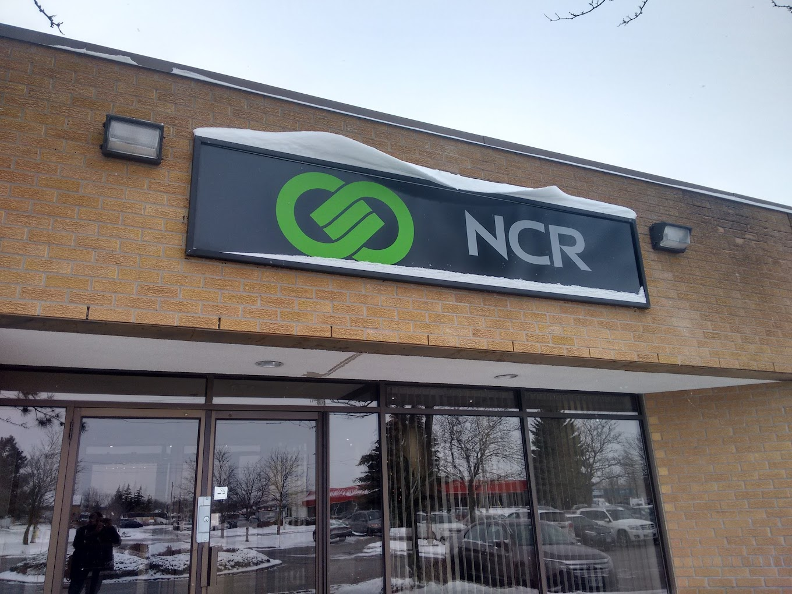
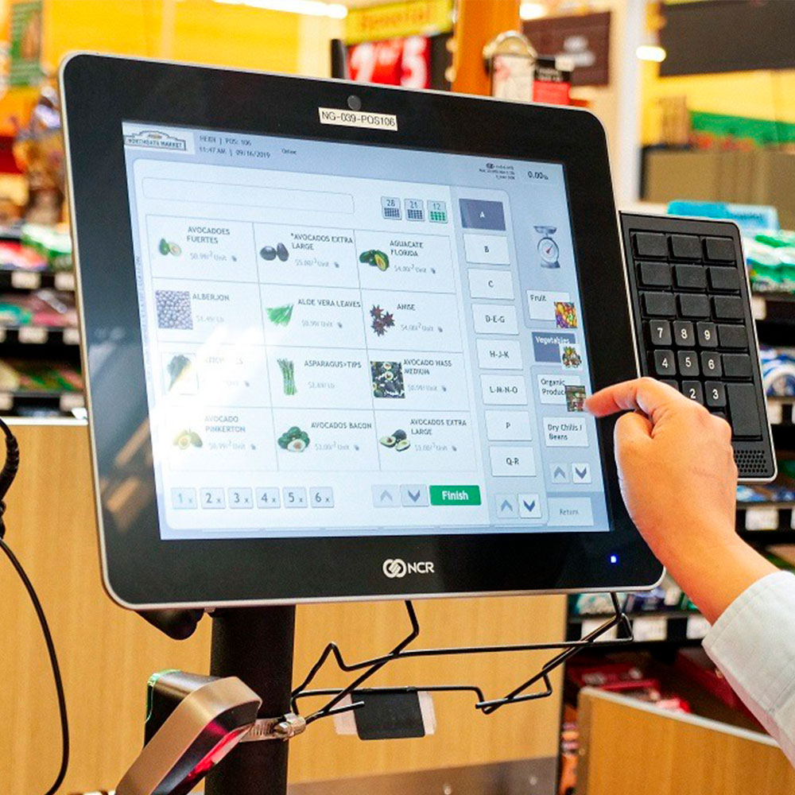
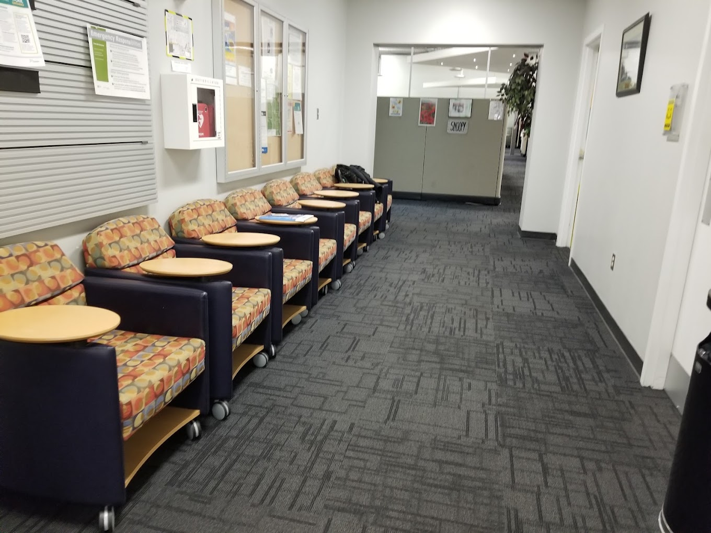

Welcome to my co-op work term report for NCR Corporation! Here, I'll talk about my time, what I learned, the goals I achieved, the challenges I faced, and the cool things I did during my work term. This was my 3rd and 4th co-op term, and it was the most challenging software job I've had so far. Working at NCR Corporation was an amazing experience that taught me a lot about software development. As a computer science major, it helped me understand what actual and high level backend development is. Let's explore my journey at NCR together!
I feel incredibly fortunate to have secured a co-op position at NCR Corporation for both the winter and summer terms. NCR is a company that makes technology solutions for businesses. They create software, hardware, and services that help companies with tasks like handling financial transactions, managing inventory, and improving customer experiences. Some of their well-known products include point-of-sale (POS) systems, self-service kiosks, and ATMs. NCR's software teams consist of software developers, engineers, testers, product managers, and other relevant professionals. They work together in a collaborative environment to design, develop, and deploy software applications and platforms. Development teams at NCR are encouraged to innovate and invest in research and development efforts. They also explore new technologies, assess market trends, and come up with novel solutions to enhance the company's offerings. NCR helps banks and credit unions with software solutions and provides ATMs and other banking technology. For retail businesses, from small stores to big chains, NCR offers systems like POS, self-checkout kiosks, and inventory management software. NCR's primary office in Ontario can be found in Waterloo. This location serves as a central hub for their operations and activities in the region.
 As a Software Developer - Backend co-op at NCR Corporation, my role was crucial in creating innovative technology solutions. I was responsible for designing and implementing robust backend systems and applications that powered NCR's software. I collaborated with talented teams of frontend developers, product managers, and quality assurance professionals, and we worked together to deliver high-quality and scalable solutions for various industries. My role also involved designing and developing APIs to support our software applications and services. Working in collaboration with frontend developers, I ensured a smooth integration between user interfaces and backend functionality. Additionally, I handled implementing data storage solutions and optimizing database performance to ensure efficient data retrieval and storage. By closely working with product managers, I gained a comprehensive understanding of project requirements and how to translate them into technical specifications. I actively participated in code reviews, testing, and debugging processes to maintain high code quality and promptly resolve any issues that may arise. To stay ahead in the workplace, I constantly kept myself updated with the latest technologies and industry trends, bringing innovative ideas to enhance NCR's products. My passion lies in continuously improving and optimizing existing software components to achieve better performance and maintainability for the software solutions. During my NCR internship, I very closely worked with two talented Software Development Engineers (SDE1 and SDE2). They provided valuable guidance and support, boosting my confidence and improving my technical skills. Their mentorship left a lasting impact, inspiring me to foster a collaborative and supportive work environment. I am grateful for the experience and eager to use it forward in my future career. As a software development intern at NCR, I needed to be proficient in DevOps tools like Jenkins and Docker for CI/CD automation. My backend development skills included Java and Spring Boot for scalable systems. Additionally, I accuired the skills like, integrating YAML configurations into REST APIs and modernizing Spring Boot and JDK dependencies. Troubleshooting skills were crucial for identifying and resolving issues efficiently. Proficiency in Git for version control and strong collaboration abilities were essential skills for this role. Analytical thinking was vital for problem-solving and improving system performance. I possessed certain skills from my university education, while others were acquired through hands-on learning in the workplace.
Before starting my work term I had set a few goals in my mind which I wanted to achieve by the end of my work term. These goals allowed me to work hard and be a better learner and employee by the end of my term. Here are my goals for this work term and how I achieved these goals.
As I was working with backend software development teams so I wanted to learn about how to organize my work and manage my time appropriately for each task.
Action Plan:
I talked to my manager and I made a rough estimate of how much work I had during the week and added timelines to my calendar and made sure to stick to those timelines and I tried to organize my work and manage my time appropriately to complete my tasks.
Measure of success:
I was able to stick to the timelines that I made and I made sure to deliver my tasks for both the teams I worked with on time without hurrying to finish them by working in a very organized way. I think I was successful in achieveing this goal of mine.
As I had to do a lot of coding in this term so I wanted to improve upon on my reading comprehension because I had to read a lot of code as well as a lot of documentation.
Action Plan:
I tried to go through more and more of already written code as this gave me an idea of how to go over and read large codebases. I also spent a lot of time in reading documentation as this also gave an idea about how documentation are meant to be read.
Measure of success:
I was able to interpret the documenation properly and understand the codebase and contribute to the codebase. I read a lot of code to understand the flow and I regularly took help from my teammates to understand more about the documentation and the code logic.
As I had to go through a lot of existing code and new code versions regularly, so, I wanted to improve upon my analysing skills to better understand how everything worked by constantly inquiring about things.
Action Plan:
I constantly tried to understand each line of code to better analyse the codebase and I inquired about the things that I did not understand, from my team members, this created a habit of inquiring and analysing in me while reading and writing code.
Measure of success:
I am able to analyse large codebases and how the applications are built upon them and how they are using that code. I was able to do analysis on how multiple code files talk to each other. This helped me to analyse overall flow of many services.
In the past 8 months, I think I have learned a lot and transformed myself to get one step closer towards becoming a better software developer. All the skills that I learned during my work term ranging from backend-development, Devops to product ownership will help me to succeed as a developer. I got confident in developing large-scale software and became very independent and detail-oriented by working with a lot of teams during my work term. I am very sure that my development skills have gotten really sharp by now.
Everyone at NCR was very supportive and helpful and they made my co-op experience very enjoyable. I loved working with different teams as everyone was ready to share their knowledge and answer my silly questions. There are few special people who were with me at every step and made the learning process very smooth for me.
Thank you everyone :)